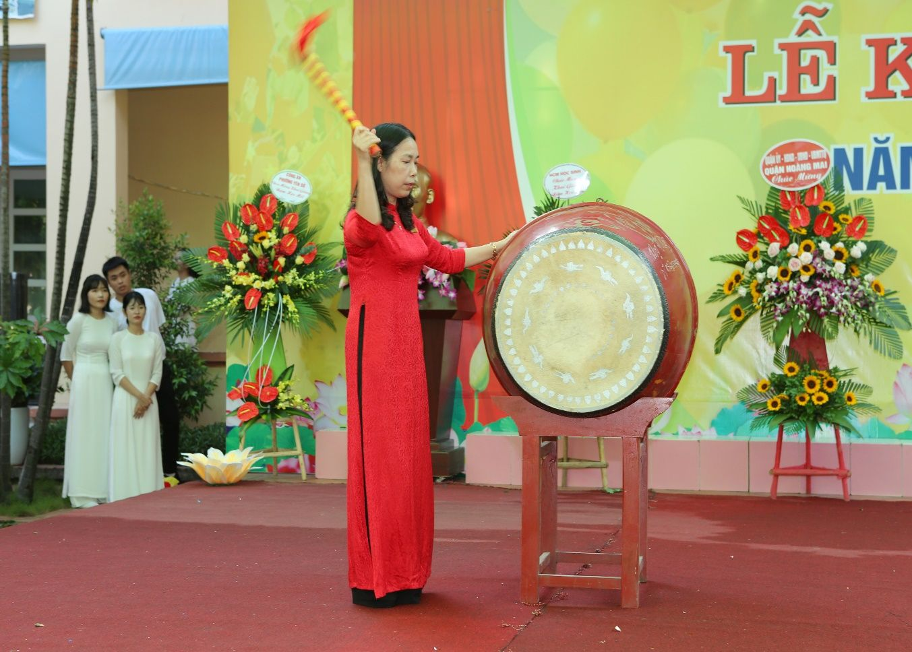
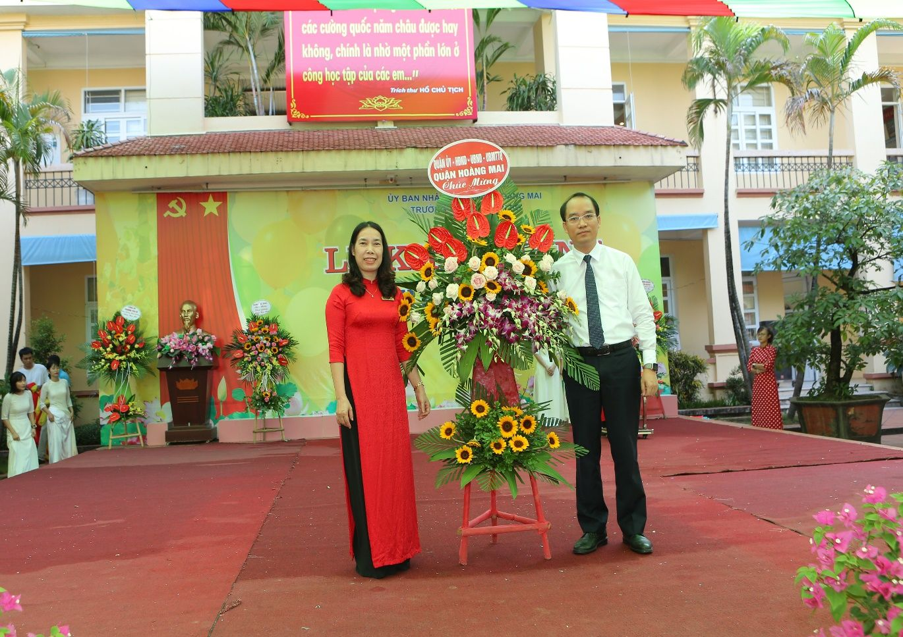
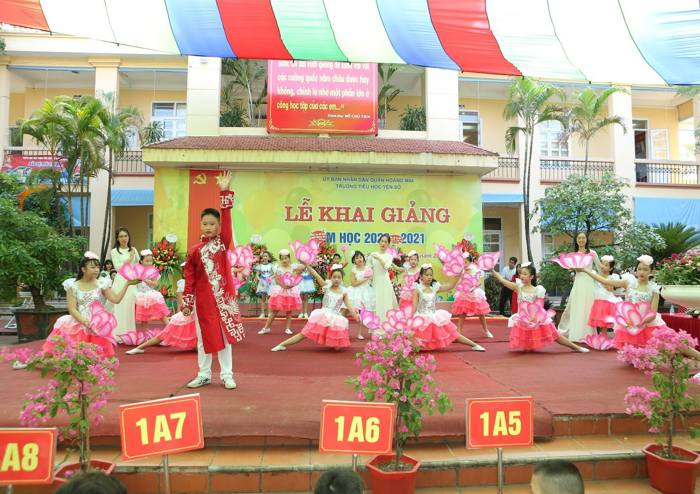

Trường Tiểu học Yên Sở long trọng tổ chức lễ khai giảng năm học mới Năm học 2020-2021
Hôm nay (5/9/2020) trong không khí của cả nước tưng bừng kỉ niệm 75 năm ngày Cách mạng tháng 8 và Quốc khánh 2/9, cùng niềm hân hoan của nhân dân cả nước chào đón ngày hội “Toàn dân đưa trẻ đến trường”, trường Tiểu học Yên Sở long trọng tổ chức Lễ khai giảng năm học mới 2020 - 2021.
Lễ khai giảng năm học này diễn ra trong không khí thật đặc biệt. Để thực hiện giãn cách xã hội, phòng chống dịch Covid-19, các em học sinh khi đến trường khai giảng sẽ được đo thân nhiệt, đeo khẩu trang, sát khuẩn tay,… trước khi vào trường. Ngoài ra, trong tình hình dịch bệnh Covid-19, lễ khai giảng năm nay được nhà trường tổ chức ngắn gọn, trang trọng, ý nghĩa ngay tại sân trường có sự tham dự của các em học sinh khối 1, khối lớp 5 cùng các lớp 2A9, 3A4, 3A10, 4A7, 4A8. Các khối lớp còn lại tham dự lễ khai giảng trực tuyến ngay tại các lớp học.
Đến dự lễ khai giảng, trường Tiểu học Yên Sở rất vinh dự được đón các đồng chí lãnh đạo quận Hoàng Mai, các đại biểu phường Yên Sở, đại diện Ban phụ huynh nhà trường cùng toàn thể cán bộ, giáo viên, nhân viên và 2304 học sinh trường Tiểu học Yên Sở.
Đúng 7 giờ 30 phút, buổi lễ bắt đầu. Mở đầu buổi lễ là màn chào đón 527 bông hoa lớp 1 đáng yêu, xinh xắn, những thành viên mới của trường Tiểu học Yên Sở.
Tiếp đó, tất cả các bạn học sinh cùng nhau chăm chú lắng nghe cô giáo Nguyễn Thị Hồng – Bí thư Chi bộ - Hiệu trưởng nhà trường đọc thư chúc mừng của Tổng bí thư – Chủ tịch nước Nguyễn Phú Trọng gửi ngành giáo dục, tuyên bố khai giảng năm học mới và đánh trống khai trường.

Cô giáo Nguyễn Thị Hồng – Bí thư chi bộ, Hiệu trưởng
đánh trống khai giảng năm học mới 2020-2021
Cũng tại buổi lễ, nhà trường vinh dự được đón nhận sự quan tâm, những lẵng hoa tươi thắm và những lời chúc mừng của các cấp lãnh đạo, các quý vị đại biểu, các tổ chức, cá nhân gửi tặng nhà trường nhân dịp khai giảng năm học mới.

Ông Nguyễn Anh Tuấn – Quận ủy viên, trưởng phòng tài chính –
kế hoạch Quận Hoàng Mai tặng hoa nhà trường
Và một phần không thể thiếu trong lễ khai giảng đó là phần văn nghệ vô cùng đặc sắc của thầy và trò trường Tiểu học Yên Sở biểu diễn chào đón năm học mới đã được các quý vị đại biểu, các bậc phụ huynh và các em học sinh toàn trường hưởng ứng nhiệt tình làm không khí buổi lễ thêm sôi động.
Tiết mục văn nghệ “Bông hoa cuộc đời” chào mừng lễ khai giảng
Chương trình văn nghệ đã khép lại Lễ khai giảng năm học 2020-2021 của trường Tiểu học Yên Sở trong không khí trang trọng, vui tươi và đầy ý nghĩa với những nụ cười, niềm vui và hạnh phúc của các em học sinh, sự quan tâm của các cấp lãnh đạo và sự ủng hộ nhiệt tình của các bậc phụ huynh. Buổi khai trường diễn ra rất trang trọng, gọn gàng và hết sức ý nghĩa. Ngày khai giảng năm học mới tràn đầy niềm vui, niềm hân hoan với quyết tâm không ngừng nghỉ của thầy và trò nhà trường sẽ hứa hẹn một năm học mới 2020 – 2021 đạt được nhiều thành tích cao trong công tác dạy và học.